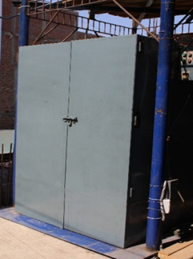

Horno electrico para tratamiento termico de transformadores y motores
¿Cuándo es necesario secar los devanados del transformador?
El secado de los devanados se realiza en todas las etapas del ciclo de vida del transformador. Este hecho se explica simplemente. La humidificación reduce el voltaje de ruptura y acelera el envejecimiento del aislamiento del transformador. Incluso en la etapa de instalación de un nuevo transformador, la humedad puede ingresar al devanado, por lo que el aislamiento debe secarse. La resistencia eléctrica de una placa aislante eléctrica bien seca y empapada en aceite es 20-25 veces mayor que la de una placa que no ha sido sometida a dicho procesamiento.
La humectación del aislamiento sólido ocurre durante la operación del transformador, lo que nuevamente requiere el uso de procesos de secado. Para implementar dicha operación tecnológica, se utiliza un horno. Esta no es la única forma de secar los devanados del transformador, pero sigue siendo una de las más populares debido a la facilidad de implementación y la eliminación uniforme de la humedad en todo el aislamiento.
Como funciona un horno
Un horno seca los devanados de los transformadores en varias etapas. Primero, el aislamiento se calienta, después de lo cual la humedad en forma de vapor pasa de las capas internas al exterior. A continuación, el vapor se transfiere desde la superficie de aislamiento al espacio circundante. El movimiento de la humedad dentro del aislamiento está determinado por la diferencia en las concentraciones y temperaturas de humedad en diferentes partes del devanado. La humedad pasa de áreas con mayor contenido a lugares con menor contenido y de áreas con mayor temperatura a áreas con menor temperatura.
La tasa de migración de humedad desde las capas inferiores hacia el exterior se garantiza mediante un buen calentamiento de la parte activa del transformador.